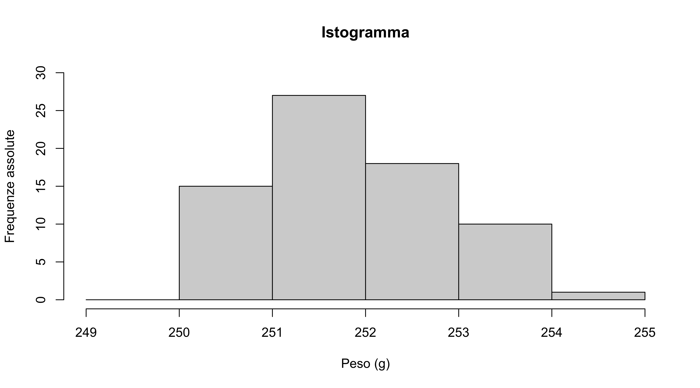

Statistica I
Esercizi 1: distribuzioni di frequenza
Homepage
Le soluzioni di alcuni esercizi sono state gentilmente fornite dal tutor di Statistica I dell’A.A. 2021/2022, Alex Alborghetti, che ringrazio. Le soluzioni sono state quindi riviste dal docente, che si assume le responsabilità di eventuali sviste ed errori.
Esercizio A (Peso pacchetti di burro)
Il controllo sul peso (in grammi) di n = 71 pacchetti di burro ha fornito la seguente distribuzione di frequenza cumulata.
| c_j (grammi) | (249,250] | (250, 251] | (251, 252] | (252, 253] | (253, 254] | (254 , 255] |
|---|---|---|---|---|---|---|
| N_j | 0 | 15 | 42 | 60 | 70 | 71 |
Si dica qual è l’unità statistica e la tipologia della variabile considerata.
Trovare le frequenze assolute n_1,\dots,n_k e relative f_1,\dots,f_k.
Rappresentare graficamente il fenomeno tramite un istogramma.
Quanti sono i pacchetti di burro che pesano meno di 252g? Quanti quelli che hanno un peso compreso nell’intervallo (251, 252]?
Esercizio B (Errori di stampa)
Durante la correzione delle bozze di un libro di 280 pagine si è riscontrata la seguente distribuzione degli errori di stampa per pagina:
| Numero di errori | Frequenze assolute |
|---|---|
| 0 | 112 |
| 1 | 88 |
| 2 | 44 |
| 3 | 18 |
| 4 | 10 |
| 5 | 8 |
Qual è l’unità statistica?
Di quale tipologia di variabile si tratta?
Calcolare e disegnare la funzione di ripartizione.
Qual è la proporzione di pagine con meno di 3 errori? Quanto vale F(3)?
Esercizio C (Titolo di studio)
Ai dipendenti di una piccola azienda è stato chiesto di precisare il loro titolo di studio. I risultati relativi a n=22 dipendenti sono i seguenti:
L, E, E, E, I, E, I, S, L, E, S, I, N, E, N, S, S, I, E, I, I, S in cui: N = nessun titolo di studio, E = licenza elementare, I = licenza media inferiore, S = licenza media superiore, e L = laurea.
Qual è l’unità statistica? Di quale tipologia di variabile si tratta?
Organizzare i dati in una tabella.
Calcolare le frequenze relative.
Si calcoli la percentuale di dipendenti aventi la licenza media o un titolo superiore.
Esercizio D (Cicchitelli, esercizio 2.4)
Quella che segue è una distribuzione di frequenze di famiglie italiane secondo il numero di componenti (dati Istat; frequenze espresse in migliaia)
| Numero di componenti | 1 | 2 | 3 | 4 | 5 | 6 o più |
|---|---|---|---|---|---|---|
| Numero di famiglie (in migliaia) | 5428 | 5905 | 4136 | 1266 | 369 | 71 |
Si riscriva la tabella riportando accanto alle frequenze assolute quelle relative. Sulla base di questo, poi, si faccia un commento sulla struttura della famiglia in Italia
Si determinino le frequenze cumulate relative e si commentino i risultati.
Esercizio E
Si considerino le funzioni di ripartizione relative alle variabili x ed y
Quale variabile assume valori tendenzialmente maggiori?
Sulla base del grafico, quanto vale approssimativamente F_x(0), dove F_x(\cdot) è la funzione di ripartizione della variabile x? Quanto vale F_x(2)?
Sulla base del grafico, quanto valgono il minimo ed il massimo della variabile y?
Si dica quale dei seguenti vettori sono i dati x e quale invece sono i dati y (si ignori il simbolo
[1]). Si ottengano quindi i valori precisi delle quantità calcolate nei punti precedenti.
## [1] 0.22 -0.64 -0.60 -0.89 -1.56 0.79 -0.50 -2.97 -0.30 -1.47## [1] -0.56 -0.23 1.56 0.07 0.13 1.72 0.46 -1.27 -0.69 -0.45